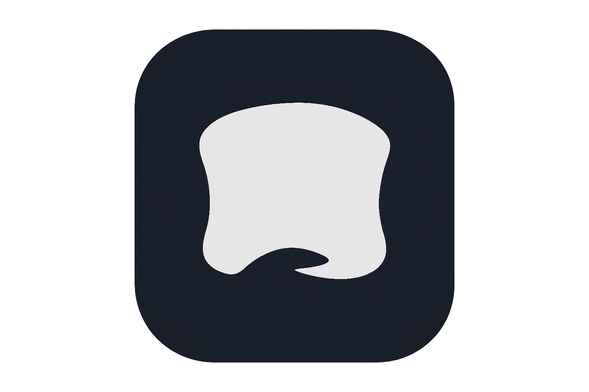

Hi, I'm GrizzyBurr!
Or just Matt is fine
I'm a low-voltage technician with an interest in homelabbing, LLMs, and whatever I feel like. I spend my time building practical tools, experimenting with new technology, and working on creative projects ranging from web apps to character-driven writing. And I love reading WLW romance.
Cozy | LLM Roleplay Frontend

Self-hosted, single-user, with a little Discord inspiration ✨
Cozy works with SillyTavern-compatible V2 character cards and OpenAI-style LLM servers. Personas, lorebooks, prompt presets, auto summaries, themes, and chat import/export — all running on your own machine.
Characters | Character Card v2 Compliant WIP
Nothing here yet.
Character cards I create will show up here — stories, roleplay, and worldbuilding.
What I Do
- Writing
- Vibe Coding
- Home Labbing
- WLW Novels ❤️